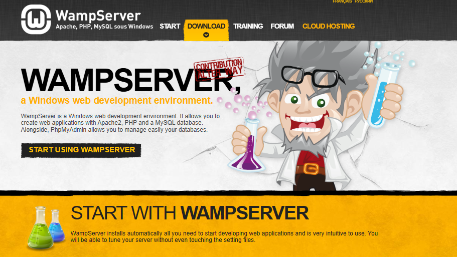

Entorno de Desarrollo Local: Montando tu propio laboratorio con WampServer
Antes de lanzar un cohete al espacio, los ingenieros pasan miles de horas en simuladores. Antes de que un chef de estrella Michelin ponga un plato en el menú, lo cocina decenas de veces en su cocina de pruebas. En el desarrollo web, nuestra "cocina de pruebas" es nuestro entorno de desarrollo local.
Imagina que quieres construir una aplicación web increíble. ¿Vas a programar directamente en el servidor final, a la vista de todo el mundo, con el riesgo de que un error Parse error: syntax error... deje la web caída para todos? ¡Ni de broma! Eso es como hacer funambulismo sin red.
Aquí es donde entra en juego WampServer. Es una herramienta que transforma tu propio ordenador con Windows en un completo servidor web, una réplica en miniatura de lo que tu aplicación encontrará en el mundo real. Es tu laboratorio privado, tu simulador, tu cocina de pruebas. Te permite construir, experimentar, romper y arreglar cosas en un entorno seguro y controlado, sin que nadie más se entere. Hoy vamos a aprender a montar este laboratorio desde cero.
Conceptos Fundamentales: Los Ingredientes de Nuestro Servidor
WampServer no es un solo programa, es un "paquete" que instala y configura por nosotros la Santísima Trinidad del desarrollo web del lado del servidor. Su nombre es un acrónimo de los componentes que lo forman:
Definición: WAMP
Es el acrónimo que describe la pila de software de un servidor web que se ejecuta en Windows. * Windows: El sistema operativo sobre el que corre todo. * Apache: El servidor web. Es el "camarero" que recibe las peticiones de los navegadores y les sirve las páginas. * MySQL/MariaDB: El sistema gestor de bases de datos. Es el "almacén" donde se guardan todos los datos de forma organizada (usuarios, productos, posts, etc.). MariaDB es un fork (una derivación) de MySQL creado por sus desarrolladores originales, y es totalmente compatible. * PHP: El lenguaje de programación del lado del servidor. Es el "cocinero" que toma los ingredientes del almacén (base de datos) y prepara el plato (la página web dinámica) que el camarero (Apache) servirá al cliente.

graph TD
subgraph "Tu Ordenador (Windows)"
A(<b>Apache</b><br>El Servidor Web)
M(<b>MySQL/MariaDB</b><br>La Base de Datos)
P(<b>PHP</b><br>El Lenguaje de Programación)
end
A --> P;
P --> M;
M --> P;
P --> A;
subgraph "Internet"
U[Tu Navegador]
end
U <-->|Petición/Respuesta HTTP| A
style A fill:#D22128,stroke:#333,stroke-width:2px,color:#fff
style M fill:#00758F,stroke:#333,stroke-width:2px,color:#fff
style P fill:#777BB4,stroke:#333,stroke-width:2px,color:#fffDesarrollo y Ejemplos Prácticos: Construyendo el Laboratorio
Manos a la obra. Montar WampServer es sencillo, pero como construir un mueble de IKEA, hay que seguir las instrucciones al pie de la letra para no acabar con un montón de tornillos sobrantes y un servidor que no funciona.
Paso 1: Descarga e Instalación
Lo primero es conseguir el instalador.
- Descarga el instalador: Ve a la página web oficial de WampServer. Verás las opciones de descarga para sistemas de 32 y 64 bits. Hoy en día, casi todos los sistemas son de 64 bits, así que esa será tu elección habitual. 
-
¡ALTO! Antes de instalar - Las dependencias críticas: WampServer depende de los paquetes de Microsoft Visual C++ para funcionar. Si no los tienes TODOS, la instalación fallará o el servidor no se iniciará.
- El propio instalador de WampServer te avisará de los paquetes que te faltan.
- La forma más segura es ir a la página de añadidos de WampServer y, en la sección "Visual C++ Redistribuable Packages", descargar e instalar el paquete "All VC Redistributable Packages (x86_x64)" que los incluye todos.

¡Este paso es OBLIGATORIO!
No te saltes la instalación de los paquetes de Visual C++. Es el motivo número uno por el que WampServer no funciona para los principiantes. Instala el paquete que los contiene todos, reinicia el PC y solo entonces, continúa.
-
Ejecuta el instalador:
- Acepta los términos de la licencia.
-
El instalador te dará información importante. Léela. Te recordará lo de los paquetes VC++ y te aconsejará no instalar WampServer sobre una versión antigua y evitar rutas con espacios o caracteres especiales como
C:\Program Files. La ruta por defecto,C:\wamp64, es perfecta. -
Sigue los pasos, que te permitirán elegir el navegador y editor de texto por defecto. Puedes dejar Edge y Notepad, o cambiarlos a Chrome y VS Code si lo prefieres.
- Finaliza la instalación.
{kind=link}
graph TD
A(Inicio) --> B{¿Tengo TODOS los paquetes<br>VC++ instalados?};
B -- NO --> C[Ir a wampserver.aviatechno.net];
C --> D[Descargar e instalar 'All VC Redistributable Packages'];
D --> E[Reiniciar el PC];
E --> B;
B -- SÍ --> F[Descargar instalador de WampServer];
F --> G[Ejecutar como Administrador];
G --> H[Aceptar y leer avisos];
H --> I{¿Cambiar ruta de instalación?};
I -- RECOMENDADO NO --> J[Dejar C:\wamp64];
I -- SÍ (NO USAR ESPACIOS) --> J;
J --> K[Finalizar instalación];
K --> L(¡Laboratorio Montado!);Paso 2: El Panel de Control - Cómo usar WampServer
Una vez instalado, tendrás un icono de WampServer en tu escritorio o menú de inicio.

Al ejecutarlo, aparecerá un nuevo icono en tu barra de tareas, junto al reloj. Este icono es tu panel de control.

El color del icono es VITAL:
- ROJO: Desastre. WampServer no ha podido iniciar ninguno de sus servicios principales (Apache o MySQL).
- NARANJA: Algo va mal. Uno de los dos servicios ha arrancado, pero el otro no.
- VERDE: ¡Éxito! Todo está funcionando correctamente. Tu servidor está online (localmente).
Un clic izquierdo en el icono verde abre el menú principal:
- Servidor virtual / Localhost: Abre la página de inicio de tu servidor en el navegador.
- phpMyAdmin: Abre la herramienta gráfica para gestionar tus bases de datos.
- directorio www: Abre la carpeta
C:\wamp64\wwwen el explorador de archivos. Aquí es donde vivirán tus proyectos. - Menús para Apache, PHP y MySQL que te permiten acceder a sus ficheros de configuración.

Un clic derecho abre un menú con más opciones de configuración y herramientas.
{kind=link}
Paso 3: Tu Primer Proyecto
Crear un proyecto es tan fácil como crear una carpeta:
- Ve al directorio
wwwde WampServer (puedes usar el acceso directo del menú). - Crea una nueva carpeta. El nombre de la carpeta será el nombre de tu proyecto. Por ejemplo:
mi-primera-app. - Dentro de esa carpeta, crea un fichero llamado
index.php. - Abre
index.phpen tu editor de código y escribe tu primer script:<?php // Fichero: C:\wamp64\www\mi-primera-app\index.php echo "<h1>¡Hola, Mundo!</h1>"; echo "<p>Mi servidor WampServer funciona perfectamente.</p>"; echo "<p>La versión de PHP es: " . phpversion() . "</p>"; ?> - Guarda el fichero y abre tu navegador. Ve a la dirección
http://localhost/mi-primera-app/. ¡Verás tu página en acción!
Paso 4: Gestionando Bases de Datos con phpMyAdmin
Casi toda aplicación web necesita una base de datos. WampServer te lo pone fácil con phpMyAdmin.
-
Haz clic izquierdo en el icono de WampServer y selecciona
phpMyAdmin.

-
Se abrirá una pestaña en tu navegador con la interfaz de inicio de sesión.
- Usuario:
root - Contraseña: (déjala en blanco)
- Usuario:
- ¡Ya estás dentro! Desde aquí puedes crear bases de datos, crear tablas, insertar datos, exportar, importar... todo lo que necesites para tu proyecto.

Reflexionemos un poco...
- Si al iniciar WampServer, el icono se queda en naranja, ¿qué podría estar pasando? ¿Cuál es una de las causas más comunes de que Apache no arranque? (Pista: otro programa usando su "puerta").
- ¿Por qué es una mala idea poner tus proyectos en una carpeta fuera del directorio
C:\wamp64\www? - Entra en phpMyAdmin. ¿Cuál es el "collation" (cotejamiento) por defecto al crear una nueva base de datos? Investiga por qué
utf8mb4_general_cies una buena opción para proyectos web. - WampServer te permite cambiar de versión de PHP con un par de clics. ¿En qué situación real de trabajo crees que esta funcionalidad sería increíblemente útil?
Cambiando la versión de PHP
El beneficio principal de WampServer, sobresaliendo sobre sus competidores (principalmente XAMPP), radica en la sencillez de instalar y usar otra versión de PHP, Apache, MySQL, MariaDB o phpMyAdmin.
Es tan sencillo, solo necesita visitar la página oficial de añadidos de WampServer, descargar el archivo, instalarlo (Con WampServer cerrado) y al abrirlo nuevamente desde el panel de control, podrá elegir qué versión usar. Si se ha instalado WampServer 64 bits, también se deben instalar los complementos en 64 bits. Esta imagen presenta las versiones de PHP que se encuentran instaladas en la plataforma que se está empleando, y solo necesitamos hacer clic en la versión que deseamos usar. Por ejemplo, tengo instaladas estas:

Aplicación en el Mundo Real: El Día a Día de un Desarrollador
Usar un entorno de desarrollo local como WampServer no es solo para aprender. Es una práctica estándar y profesional:
- Desarrollo de temas y plugins de CMS: Antes de instalar un plugin de WordPress en la web de un cliente, lo pruebas en tu WampServer para asegurarte de que no rompe nada.
- Pruebas y Depuración: Te permite activar los informes de errores de PHP al máximo nivel (
error_reporting(E_ALL)) para ver cadanoticeywarning, algo que nunca harías en un servidor en producción porque revelaría información sensible. - Trabajo sin Conexión: Puedes seguir desarrollando una aplicación web en tu portátil durante un viaje en tren, sin necesidad de conexión a internet.
- Migraciones Seguras: Cuando un cliente quiere actualizar su web de una versión de PHP antigua (ej. 7.4) a una nueva (ej. 8.2), puedes simular todo el proceso en WampServer, instalar la versión de PHP necesaria, y corregir todos los errores de compatibilidad antes de tocar el servidor real.
El Muro de los Lamentos: Solución a Problemas Comunes
Si WampServer no se pone en verde, no entres en pánico. Estos son los sospechosos habituales:
Puerto 80 Ocupado
Apache necesita el puerto 80 para funcionar. Si otro programa lo está usando (Skype es un culpable clásico), Apache no podrá arrancar.
Solución: Cierra el programa conflictivo o cambia el puerto que usa Apache en el fichero httpd.conf.
Error en MySQL
Asegúrate de que no tienes otro servicio de MySQL funcionando de otra instalación previa. Solo puede haber un "sheriff" de MySQL en la ciudad.
Problemas de Permisos
A veces, Windows es quisquilloso con los permisos. Solución: Ejecuta siempre WampServer como Administrador (clic derecho -> "Ejecutar como administrador").
Firewall o Antivirus Bloqueando
Tu software de seguridad podría ver a Apache como una amenaza e impedirle que acepte conexiones.
Solución: Añade una excepción en tu firewall para permitir el acceso a WampServer y al servicio de Apache (httpd.exe).
Alternativas en el Ecosistema
WampServer es fantástico, pero no es el único. Es importante conocer a sus "primos":
| Herramienta | Sistemas Operativos | Enfoque Principal | Característica Destacada |
|---|---|---|---|
| WampServer | Windows | Flexibilidad y control de versiones. | Cambiar de versión de PHP, Apache o MySQL con un clic. |
| XAMPP | Windows, Mac, Linux | Multiplataforma y simplicidad. | El más conocido y versátil. Incluye Perl y Tomcat. |
| MAMP | Mac, Windows | Centrado en la experiencia de usuario de macOS. | Muy popular entre diseñadores y desarrolladores en Mac. |
| Laragon | Windows | Rapidez, ligereza y auto-configuración. | Extremadamente rápido de iniciar. Crea hosts virtuales automáticamente. |
Para Saber Más
¿Quieres profundizar? Aquí tienes material de primera calidad para llevar tu laboratorio al siguiente nivel.
- WampServer Official Forum: El foro oficial. Si tienes un problema raro, es muy probable que alguien ya lo haya preguntado y resuelto aquí. http://forum.wampserver.com/list.php?2
- Página de Add-ons de WampServer (VC++ y versiones): La página que ya hemos mencionado para descargar los paquetes de Visual C++ y también versiones adicionales de Apache, PHP y MySQL. https://wampserver.aviatechno.net/
- Guía completa de XAMPP: El artículo enlazado en el propio documento original, para que puedas comparar con su principal alternativa. (El documento original menciona una "guía completa de XAMPP", pero no proporciona un enlace. Un buen recurso sería la página oficial de XAMPP o un tutorial de una fuente fiable como DigitalOcean o SitePoint).